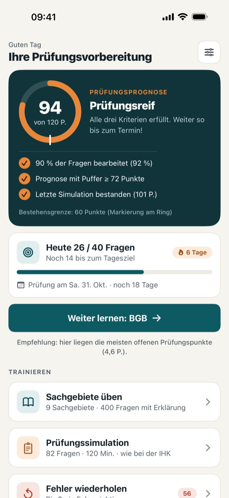
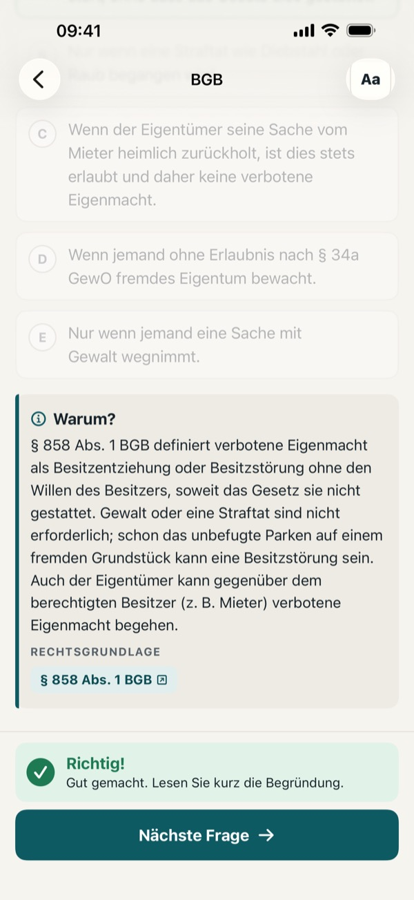
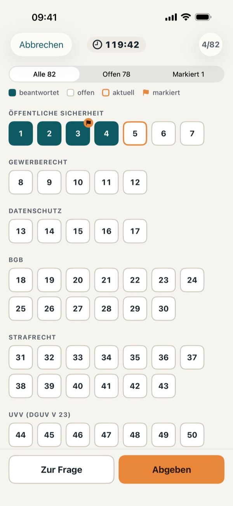
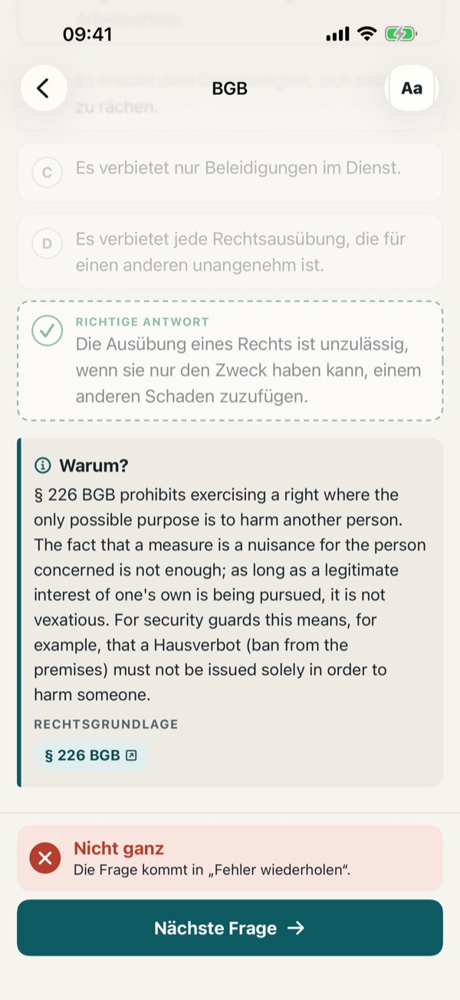

34a Sachkunde Prüfung 2026
Sachkundeprüfung · GewO-Fragen
Im App Store laden



Bestehen Sie die Sachkundeprüfung nach § 34a GewO – gezielt vorbereitet, mit 110 Übungsfragen, echter Prüfungssimulation und einer Prognose, die Ihnen ehrlich sagt, wann Sie prüfungsreif sind.
WISSEN, WANN SIE PRÜFUNGSREIF SIND
Die Punkteprognose zeigt Ihren Stand im Verhältnis zur Bestehensgrenze (60 von 120 Punkten) und zählt die Tage bis zu Ihrem Prüfungstermin. Die App empfiehlt immer das Sachgebiet, in dem die meisten Punkte zu holen sind.
JEDE ANTWORT ERKLÄRT – MIT PARAGRAPH
Zu jeder Frage gibt es eine verständliche Erklärung und die Rechtsgrundlage (GewO, BewachV, BGB, StGB, StPO, WaffG, DSGVO, BDSG, DGUV Vorschrift 23). Bei verlinkten Paragraphen öffnet ein Tippen den Gesetzestext.
ERKLÄRUNGEN AUCH AUF ENGLISCH UND TÜRKISCH
Deutsch ist nicht Ihre Muttersprache? Fragen und App bleiben auf Deutsch – genau wie in der Prüfung –, jede Erklärung können Sie aber auch auf Englisch oder Türkisch lesen. Die deutschen Fachbegriffe stehen jeweils dabei. Dazu: große Schrift per Tipp und Dunkelmodus.
PRÜFUNGSSIMULATION IM AKTUELLEN FORMAT
82 Fragen, 120 Minuten, 120 Punkte, bestanden ab 50 % – mit Timer, Markieren, Übersicht, Teilpunkten bei Mehrfachauswahl und Auswertung nach Sachgebieten. Auch das klassische Format mit 72 Fragen ist enthalten.
ALLE 9 SACHGEBIETE
Öffentliche Sicherheit und Ordnung · Gewerberecht · Datenschutz · Bürgerliches Recht · Straf- und Strafverfahrensrecht · Unfallverhütung · Umgang mit Waffen · Umgang mit Menschen & Deeskalation · Sicherheitstechnik – gewichtet wie in der Prüfung.
FEHLER GEZIELT WIEDERHOLEN
Falsch beantwortete Fragen landen automatisch in Ihrer Wiederholungsliste, bis Sie sie zweimal in Folge richtig beantworten.
FIT FÜR DIE MÜNDLICHE PRÜFUNG
16 Fallkarten mit typischen Situationen aus dem Wachdienst – Ladendieb, Hausverbot, Einlasskontrolle, Pfefferspray, Bombendrohung, Deeskalation – mit Bedenkzeit und Checkliste zur Selbstkontrolle.
EINMAL ZAHLEN. KEIN ABO.
Gratis: 5 Fragen je Sachgebiet und die ersten 3 Fallkarten. Die Vollversion schaltet alle 110 Fragen, die Prüfungssimulation und alle 16 Fallkarten frei – als Einmalkauf, ohne Abo, ohne Werbung, ohne Konto. Funktioniert vollständig offline, Ihre Daten bleiben auf Ihrem Gerät.
Hinweis: Alle Übungsfragen sind eigenständig auf Grundlage der Gesetzestexte erstellt – keine Originalfragen der IHK. Keine Verbindung zur IHK oder einer anderen Behörde. Keine Rechtsberatung; maßgeblich sind die aktuellen Gesetze und die Prüfungsordnung Ihrer IHK.
Datenschutz: https://baytechbv.github.io/privacy/sachkunde-34a/
Nutzungsbedingungen (EULA): https://www.apple.com/legal/internet-services/itunes/dev/stdeula/
34a Sachkunde Prüfung 2026
Security Guard Exam Germany
Download on the App Store



Pass the German security guard exam (Sachkundeprüfung § 34a GewO) – with 110 practice questions, a realistic exam simulation and a forecast that tells you honestly when you are ready.
EXPLANATIONS IN ENGLISH OR TURKISH
German is not your first language? The questions and the app itself are in German – just like the real exam – but you can switch every explanation to English or Turkish. The key German legal terms stay in the text, so you learn the words you will meet in the exam.
EVERY ANSWER EXPLAINED – WITH THE LAW
Each question comes with a clear explanation and its legal basis (GewO, BewachV, BGB, StGB, StPO, WaffG, DSGVO, BDSG, DGUV Vorschrift 23). Where a paragraph is linked, tap it to open the official law text.
KNOW WHEN YOU ARE READY
The points forecast shows where you stand against the pass mark (60 of 120 points) and counts down to your exam date. The app always suggests the subject area where you can gain the most points.
EXAM SIMULATION IN THE CURRENT FORMAT
82 questions, 120 minutes, 120 points, pass mark 50% – with timer, flagging, overview, partial credit for multiple choice and results by subject area. The classic 72-question format is included too.
ALL 9 SUBJECT AREAS
Public safety and order · Trade law · Data protection · Civil law · Criminal law and procedure · Accident prevention · Weapons · Dealing with people & de-escalation · Security technology – weighted as in the exam.
REVIEW YOUR MISTAKES
Wrong answers go to your review list automatically until you get them right twice in a row.
READY FOR THE ORAL EXAM
16 case cards with typical situations from security work – shoplifter, exclusion from premises, door supervision, pepper spray, bomb threat, de-escalation – with thinking time and a checklist to test yourself.
PAY ONCE. NO SUBSCRIPTION.
Free: 5 questions per subject area and the first 3 case cards. The full version unlocks all 110 questions, the exam simulation and all 16 case cards – a one-time purchase, no subscription, no ads, no account. Works completely offline; your data stays on your device.
Note: all practice questions are written independently on the basis of the statutes – not original IHK questions. Not affiliated with the IHK or any public authority. Not legal advice; the current law and your IHK's examination regulations take precedence.
Privacy: https://baytechbv.github.io/privacy/sachkunde-34a/
Terms of Use (EULA): https://www.apple.com/legal/internet-services/itunes/dev/stdeula/